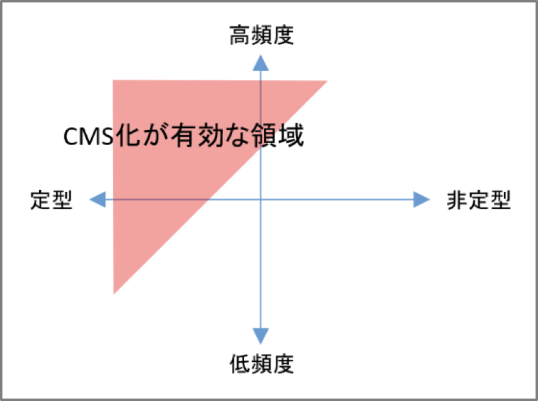

成功へ導く運用やりますRunning web sites
- HOME
- 成功へ導く運用やります
ウェブサイトの完成は、「終わり」ではなく「スタート」です。公開してアクセスが集まって、はじめて成果が出始めます。公開前に行った設計が必ず適切とは限りません。予想が、良い方、悪い方、どちらにもずれる可能性があり、悪い方にずれた場合には、修正することが必要です。また、顧客要望の変化に応じて、情報の構造や種類を見直したり、追加したり、常に発生する新しい状況に対応していくこともよいサイトの条件です。
ウェブマスターズの運用支援
コンテンツは、常に新しい情報を載せ続ける必要がありますし、さらに充実させていくことも考えなければなりません。システムは常に稼働していますし、いつ脅威が襲ってくるのか分かりません。状況の変化に応じて、機能やスペックを拡充することも必要です。
わたしたちは効果を上げ続けるために、運用はコンテンツとシステムに分けて考えます。またコンテンツ運用は、大きく分けて、定型的な情報追加と非定型な増築があります。ウェブマスターズは、そのいずれに対しても運用支援を積極的に行っています。
適切な作業分担（クライアントとプロのハイブリッドで）
サイトの鮮度を保つ定型的な更新、頻度の高い更新作業は、業者を使わずCMSでクライアントに行って頂くことで、スピードとコスト抑制の両方を実現できます。業者を使えば、作業のプロセスが増え必要な時間も増えます。プロセスが増えれば関わる人が増えますから、コストも増えます。業者を使わずCMSを使って更新作業を安全で簡単にできるようにすれば、スピードとコスト抑制の両方が手に入るのです。
一方で、新しいコンテンツやデザイン重視のページは、業者への依頼をお勧めします。すべてをCMS化して社内で行いたいと考えるクライアントに出会うこともありますが、滅多に使わない機能を持つため費用対効果が悪いことが多いです。また、CMS化することは一定の型にはめることですから、デザインやレイアウトの自由度が失われ、思い通りにできないことも起こります。新しいコンテンツやデザイン重視のページは、業者への依頼がお勧めです。

インターネットやコンピューターに関する専門知識が不要
クライアント自身でサイトを持ち、運用を開始しようとすると、ウェブサーバを立てるか、そこまでしない場合でも、レンタルサーバを契約し、ドメインを取得して借りたサーバと連携させる、ということが必要です。これだけでも、普段インターネットのユーザでしかない人にとっては、なかなかハードルが高いもの。さらに、うまく行かない場合の原因を探し出すのは至難の業です。こういった専門知識が必要な領域はプロに任せ、クライアントはウェブサイトを持つことで達成したい目的に集中することをお勧めします。
もちろん、高度なセキュリティが必要とされる場合、機密性の高い情報を扱う場合、特殊な使命を負った機関など、個別にはいろいろな要件が存在しますので、ウェブマスターズは柔軟に対応いたします。
プロに相談できる
ウェブサイトを運用していく中で、それまでの経験にないこと、担当者や社内の人だけで判断しにくいことが起こることもあります。そういった場合に、多くのウェブサイトを日々運用しているプロに相談できると心強いもの。日常の健康管理はひとりひとりが行うことが望ましいことですが、いざとなったとき、病気やケガに見舞われたときには、かかりつけ医がいてくれると安心できる。ウェブサイトの運用でも同じことが言えます。
アクセス解析などの的確な現状把握
ウェブサイトの運用で長く効果を上げ続けるには、継続的な改善の仕組み（いわゆる”PDCA”）を確立することが大切。その基盤は“C“を仕組みに組み入れること、つまり、現状を把握する習慣を作ることです。放っておくと“P“と“D“を場当たりに繰り返すことになりがちですが、“C“が見えると自然と”A”を思いついて実行したくなります。もちろん、”A”まで仕組みに入れましょう。
ウェブサイトの現状把握には、アクセス解析（無料のGoogle Analyticsが有名）が主流で、よく見られているページや時間帯、検索キーワードなどを知ることができますが、他にも、画面のどの部分がクリックされているのかを知りデザインやナビゲーションの改善に役立てるとか、問い合わせや注文などのフォームがどの画面で離脱されているのかを見て問題点を見つける、などといった情報もサイト改善に活用します。
業者が運用に関わることで次のリニューアルがレベルアップ
ウェブサイトは千差万別。取り扱う商材などの情報も、それを届けたいターゲットも、利用頻度も市場規模も、みな異なりますので、わたしたち業者も最初からすべてに深い理解を持っているわけではありません。構築に関わることでかなり理解を深めますが、運用をお手伝いすることでさらにその理解が深まります。
例えば、閲覧者の声を受けてコンテンツを改善することで、ターゲットとなる人物像がより鮮明になります。ターゲット層が高齢であれば、フォントサイズを上げるとかボタンを大きくするなど。B2Cのサイトであれば顧客像はイメージしやすいですが、B2Bで取引する相手のことは想像しづらいものです。そういった方にサイト運用のミーティングでお会いすることができ、理解が深まることもあります。